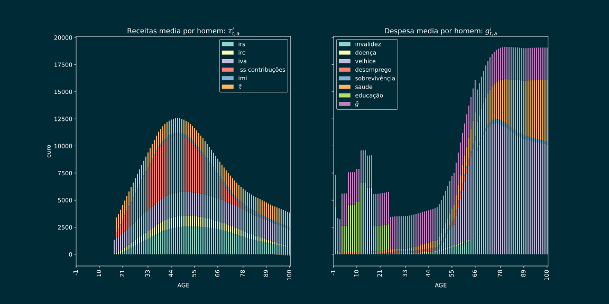
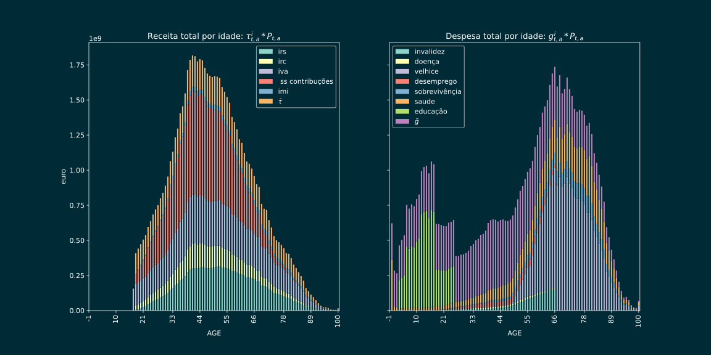

<!doctype html>
<html lang="en">

	<head>
		<meta charset="utf-8">

		<title>IJI</title>
        

		<link rel="stylesheet" href="dist/reset.css">
		<link rel="stylesheet" href="dist/reveal.css">
		<link rel="stylesheet" href="dist/theme/moon.css" id="theme">
        

		<!-- Theme used for syntax highlighting of code -->
		<link rel="stylesheet" href="plugin/highlight/monokai.css">
       
	</head>

	<body>

   

		<div class="reveal">

			<div class="slides">


                <!-- Slides are separated by three dashes (quick 'n dirty regular expression) -->
                <section data-markdown data-separator="^---$" data-separator-vertical="^\n--\n$">
                    <script type="text/template">
                        <!-- .slide: style="text-align: center;" -->

                        
                        ### Indicadores de justiça fiscal Intergeracional

                        ### Finanças Públicas

                        #### Francesco Franco 

                        #### 5 Dezembro 2022

                        
                        


                        ---

                        <!-- .slide: style="text-align: left;" -->
                       
                        ### Objetivo
                        
                        No âmbito do projeto Índice de Justiça Intergeracional proposto pelo IPP à
                        FCG pretende-se construir um índice que permita avaliar a evolução da justiça Intergeracional na dimensão
                        da sustentabilidade das finanças publicas  em Portugal.

                        <center></center>

                        Proposta tem ponto de partida em Bernardino, Franco, Teles (2017) e (2019).
                     
                        
                       
                        ---

                        <!-- .slide: style="text-align: left;" -->
                       
                        ### Generational Accounting

                        Generational Accounting de Auerbach et al. (1991a, 1994):

                        - Nivel granular  
                            - calcula o montante de impostos, de contribuições para a providência social e de taxas que cada indivíduo médio paga de acordo com a idade, género e nível de educação
                            - calcula as transferências e despesas (por exemplo, pensões, prestações de seguro de saúde, benefícios para as crianças, apoio social, serviços de educação pública, bens públicos) que cada indivíduo recebe do estado 
                        - Nivel agregado
                            - projeta as receitas e despesas utilizando as projecoes demograficas (por idade) e cenarios macroeconomicos
                            - mede os desvios entre futura receitas e futura despesas 
                        
                        ---

                        <!-- .slide: style="text-align: left;" -->
                           
                        ### Finanças Publicas

                        1. Ponto de partida e o vinculo dinamico
                        $$B_{t}=G_{t}-T_{t}+\left(1+i_{t}\right)B_{t-1}$$

                        2. Explodir as receitas e despesas
                        
                        $$T_{t}\equiv\sum_{i}\sum_{a}^{J}\tau_{t,a}^{i}P_{t,a}$$
                        
                        $$G_{t}\equiv\sum_{i}\sum_{a}^{J}g_{t,a}^{i}P_{t,a}$$ 
                        
                        onde $a$ e a idade (versao mais completa usa genero e 3 niveis de educação)


                        ---

                        <!-- .slide: style="text-align: left;" -->

                        ### Profilos Individuais
                        
                        $\tau_{a}^{i}$ e $g_{a}^{i}$ por individuo medio (oerencia microdados com macrodados)

                        <center></center>
                       
                        ---

                        <!-- .slide: style="text-align: left;" -->

                        ### Receitas

                        | Categoria     |  Valor (M€)   |  (%)   |
                        |:--------------|--------------:|-------:|
                        | *Distribuidas por idade*  |   |        |
                        | IRS            | 12.610       |   15,2 |     
                        | IRC            |  6.281 |  7,6 |        
                        | IMI            | 1.610 | 1,9 |
                        | IVA            |16.810 | 20,2 | 
                        | Contribuçoes Sociais      | 22.685 | 27,3 |
                        | *Distribuidas uniformemente*  | 23.114 |   27,8  |
                        | **Receitas Totais**  | 83.110 |   100,0  |       
                        
                        

                        

                        ---

                        <!-- .slide: style="text-align: left;" -->

                        ### Despesas
                        

                        | Categoria     |  Valor (M€)   |  (%)   |
                        |:--------------|--------------:|-------:|
                        | *Distribuidas por idade*  |   |        |
                        | Pensão de invalidez            | 2.020       |   2,3 |     
                        | Pensão de velhice            |  22.310 |  25,1 |        
                        | Subsidio de doença            |443 | 0,5 |
                        | Pensão de sobrevivência            |3.364 | 3,8 | 
                        | Subsidio de desempego      | 1.540 | 1,7 |
                        | Abono de familia     | 2.089 | 27,3 |
                        | Despesas com educaçao      | 9.420 | 10,6 |
                        | Despesas com saude      |11.361 | 12,8 |
                        | *Distribuidas uniformemente*  | 28.892 |   32,5  |
                        | Juros      | 7.437| 8,4 |
                        | **Receitas Totais**  | 88.876 |   100,0  | 

                       
                        ---

                        <!-- .slide: style="text-align: left;" -->

                        ### Profilos Aggregados
                        
                        $\sum_{i}\sum_{a}^{J}\tau_{a}^{i}P_{a}$ e $\sum_{i}\sum_{a}^{J}g_{a}^{i}P_{a}$ utilizando populacao por idade (genero e educação na ultima versao)  

                        <center></center>

                        ---

                        <!-- .slide: style="text-align: left;" -->

                        ### Projeçoes

                        1. Macro: "discount factor" $D_{t}=\frac{\left(1+\gamma_{t}^{e}\right)\left(1+\pi_{t}\right)}{\left(1+i_{t}\right)}$


                        |     | $\gamma$ | $\approx$	| $\gamma^{e}$ | +  | $n^{e}$ | +  |	$\pi$ | $i$  | $n$ |
                        |:--------------------------------------------------|:------:|:-----:|:-----:|:--:|:----:|:--:|:-----:|:-----:|:----:|
                        |1995-2020                  |3,85%     |	        |   1,09%     |	   |  0,36%  |	  | 2,33%|  	4,58%|	0.10% |
                        |1995-2009  2013-2020      |4,77%     |	        |   1,14%     |	   |  0,87%  |	  | 2,68%|  	4,69%|	0.14% |


                        2. Populaçao: $P_{t+s,a}$ utiliyando projeçoes demograficas.
                        
                       
                        ---

                        <!-- .slide: style="text-align: left;" -->

                        ### Indice de sustentabilidade

                        Uma metrica natural para medir a sustentabilidade das finanças publicas e:
                        
                        $$\theta_{\tau}=\frac{\sum_{s=0}^{\infty}D^{s}G_{t+s}+B_{t-1}}{\sum_{s=0}^{\infty}D^{s}T_{t+s}}$$

                        que tendo em conta os profilos etarios (genero e educaéao) e:

                        $$\theta_{\tau}=\frac{\sum_{s=0}^{\infty}\sum_{a=0}^{J}D^{s}g_{\bar{t},a}P_{t+s,a}+B_{t-1}}{\sum_{s=0}^{\infty}\sum_{a=0}^{J}D^{s}\tau_{\bar{t},a}P_{t+s,a}}$$

                        NB:

                        - diferente da metrica original de Auerbach 
                        - pouco sensivel a diferentes cenarios macros porque numerador e denominador contem o mesmo $D$, excepto o efeito de $B$.
                       
                        ---

                        <!-- .slide: style="text-align: left;" -->
                       
                        ### Novos Indices de sustenabilidade semplificados
                        

                        1. $\theta_\tau$	fator pelo qual o conjunto dos impostos, em termos per capita, teria de aumentar ou diminuir para garantir a sustentabilidade das finanças públicas.
                        2.  $\theta_g$	fator pelo qual todas as despesas per capita por faixa etária deverão aumentar ou diminuir para garantir que as finanças públicas sejam sustentáveis.
                        3.  **$\theta_{b,\tau}$** fator pelo qual o conjunto dos impostos, em termos per capita, teria de aumentar ou diminuir para garantir a sustentabilidade das finanças públicas para uma determinada trajetória do rácio divida/PIB.
                        4. **$\theta_{b,g}$**	fator pelo qual o conjunto dos despesas, em termos per capita, teria de aumentar ou diminuir para garantir a sustentabilidade das finanças públicas para uma determinada trajetória do rácio divida/PIB.

                        ---

                        <!-- .slide: style="text-align: left;" -->
                       
                        ### Novos Indices de sustenabilidade semplificados

                        Os requisitos de microdados são importantes, pelo que propomos simplificar o cálculo anual dos índices usando uma aproximação.
                        Intuitivamente, **propomos usar o perfil individual, agregando pelas três macro faixas etárias**, Jovens $V_{t}=\sum_{a=0}^{J_{W}-1}P_{t,a}$,
                        Trabalhadores $E_{t}=\sum_{a=J_{W}}^{J_{R}-1}P_{t,a}$ e Idosos $O_{t}=\sum_{a=J_{R}}^{J}P_{t,a}$,
                        de forma a obter um peso de imposto e benefício por faixa etaria,
                        $\omega_{t}^{V,i}=\frac{\sum_{a=0}^{J_{W}-1}P_{t,a}\tau_{t,a}^{i}}{\sum_{a=0}^{J}P_{t,a}\tau_{t,a}^{i}}$,
                        $\omega_{t}^{E,i}=\frac{\sum_{a=J_{W}}^{J_{R}-1}P_{t,a}\tau_{t,a}^{i}}{\sum_{a=0}^{J}P_{t,a}\tau_{t,a}^{i}}$ e 
                        $\omega_{t}^{O,i}=\frac{\sum_{a=J_{R}}^{J}P_{t,a}\tau_{t,a}^{i}}{\sum_{a=0}^{J}P_{t,a}\tau_{t,a}^{i}}$.
                        Uma vez obtido o peso, podemos usá-lo para distribuir as diferentes receitas
                        e despesas agregadas do governo por cada uma das três faixas etárias.
                        **A calibraçao dos pesos podia ser feita cada 5 anos**.

                        ---

                    

                        <!-- .slide: style="text-align: left;" -->
                       
                        ### To do

                        - costruir os indices simplificados
                        - comparar com os indicices nao simplificados
                        - automatizar o calculo

                        ---


                        OBRIGADO

                        

                       

                       


                    </script>
                </section>

            </div>
		</div>

		<script src="dist/reveal.js"></script>
        <script src="js/pdfexport.js"></script>
        <script src="plugin/markdown/markdown.js"></script>
        <script src="plugin/highlight/highlight.js"></script>
        <script src="plugin/notes/notes.js"></script>
        <script src="plugin/math/math.js"></script>
        <script src="plugin/search/search.js"></script>
        
       
     
      
		<script>

			Reveal.initialize({
				controls: true,
				progress: true,
				history: true,
                center: true,
                touch: true,
               
               
                math: {
                    mathjax: 'https://cdn.jsdelivr.net/gh/mathjax/mathjax@2.7.8/MathJax.js',
                    config: 'TeX-AMS_HTML-full',
                    // pass other options into `MathJax.Hub.Config()`
                    TeX: { Macros: { RR: "{\\bf R}" } }
                    },
        
               
                

				plugins: [ RevealMarkdown, RevealHighlight, RevealNotes,RevealMath]
			});

		</script>

	</body>
</html>
